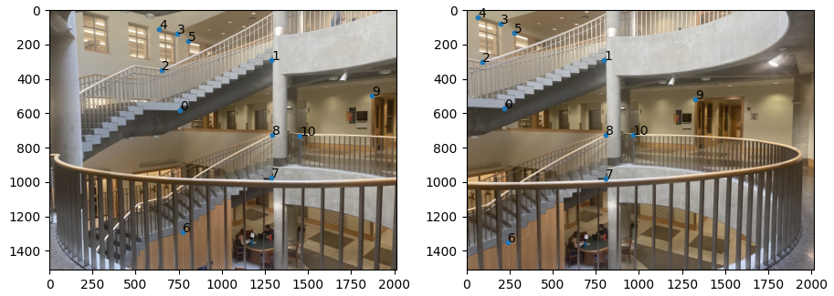
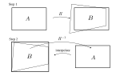
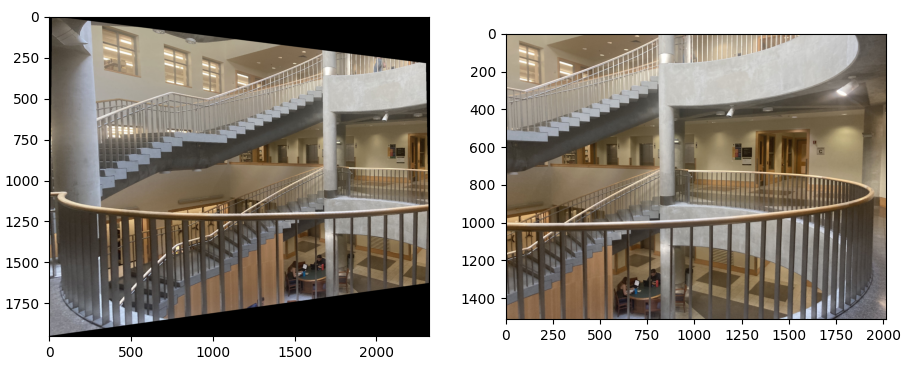
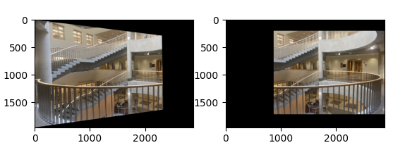
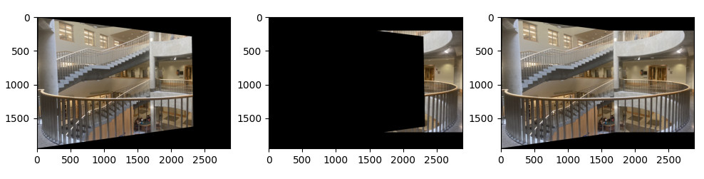
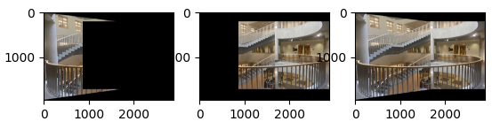
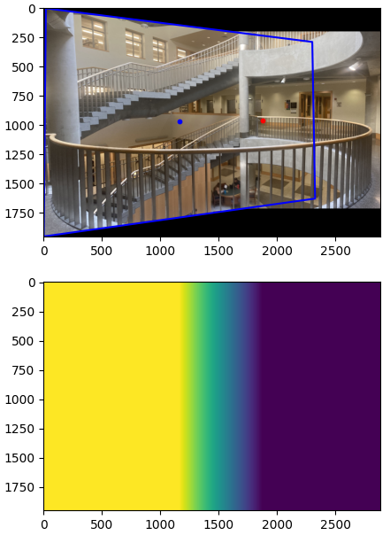
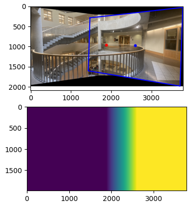
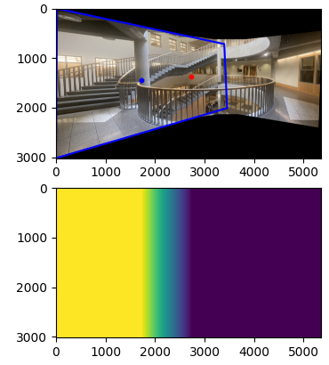
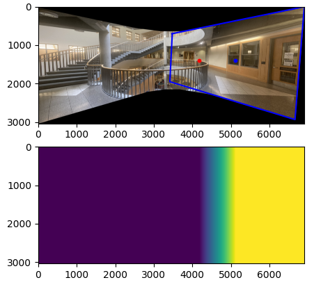

Part 1
Recovering the Homographies
A homography is given by a transformation sending \(v_{1} = \begin{bmatrix} x \\ y \\ 1 \end{bmatrix} \) to \(v_{2} = \begin{bmatrix} x^{\prime} \\ y^{\prime} \\ 1 \end{bmatrix}\) mod scaling through a matrix:
\begin{equation*} c \begin{bmatrix} x^{\prime} \\ y^{\prime} \\ 1 \end{bmatrix} = \begin{bmatrix} h_{1} & h_{2} & h_{3} \\ h_{4} & h_{5} & h_{6} \\ h_{7} & h_{8} & 1 \end{bmatrix} \begin{bmatrix} x \\ y \\ 1 \end{bmatrix} \end{equation*}
Multiplying everything out, we get:
\begin{align*} cx^{\prime} &= h_{1}x + h_{2}y + h_{3} \\ cy^{\prime} &= h_{4}x + h_{5}y + h_{6} \\ c &= h_{7}x + h_{8}y + 1 \end{align*}
and substituting:
\begin{align*} (h_{7}x + h_{8}y + 1)x^{\prime} &= h_{1}x + h_{2}y + h_{3} \\ (h_{7}x + h_{8}y + 1)y^{\prime} &= h_{4}x + h_{5}y + h_{6} \end{align*}
will give the system of equations:
\begin{align*} h_{1}x + h_{2}y + h_{3} + 0h_{4} + 0h_{5} + 0h_{6} - h_{7}xx^{\prime} - h_{8}yx^{\prime} - 1x^{\prime} &= 0 \\ 0h_{1} + 0h_{2} + 0h_{3} + h_{4}x + h_{5}y + h_{6} - h_{7}xy^{\prime} - h_{8}yy^{\prime} - 1y^{\prime} &= 0 \end{align*}
This gives a way to solve for the entries of the matrix \(H\) through a different linear equation \(Ax = b\) where \(A\) is a \(2 \times 8\) matrix, \(x\) is the vector containing the entries \(h_1, \ldots, h_8\), and \(b\) is the vector containing the values \(x', y'\). This is extendable to include more points in our homography mapping and can be solved through least squares to find the projective mapping
Here is an example of the point correspondences that I used to compute the homography

Warping the Image
This process was very similar to the last project, but instead, the warp would be determined by four corners under the homography transformation. After calculating the new corners, a resulting image would be set to encompass the warped image. The pixel values in the new image \(B\) would be determined by where the pixel landed under the transformation \(H^{-1}\).

Since the pixel location under \(H^{-1}\) is not exact, I used griddata to interpolate for the pixel value using the location and values in the original image as the data. Here is the result of the warp on the left and the base image of the panorama on the right

Image Mosaic
The first step is to correctly align the images. Here I used zero padding:

The images cannot be directly added together and averaged at the intersection because there is different lighting and exposure across images. To fix this, I created a set of two images. Let the image on the left be image \(A\) and the image on the right be image \(B\). In one image, image \(A\) would dominate, meaning that on \(\text{image}(A) \cap \text{image} B\), I would set the pixel values to be that of image \(A\). The other case would be an image where image \(B\) dominates. Here is an example of creating these images:


Then for the blending, notice that image \(A\) captures the scene more accurately the closer the pixels are to the center of image \(A\). The same goes for image \(B\). So to get a blend, a linear interpolation between their centers can be calculated through a mask. The output image is given by \begin{equation*} \text{mosaic} = \text{mask} \cdot \text{dominantA} + (1 - \text{mask}) \cdot \text{dominantB} \end{equation*} Here is an iterative approach to the blending:




Although it is possible to separate the frequencies into high and low frequencies, blending the lower frequencies and choosing one of the higher frequencies, I had more success just directly blending the images. This is because a small misalignment of about 5 pixels can cause the high frequencies in one image to look discontinuous with the high frequencies in the other. This caused the railing to look cutoff at certain areas in my previous blends. Here is the final result without separating the frequencies: